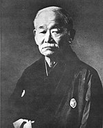
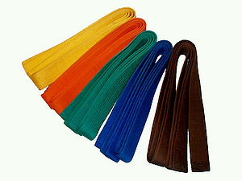
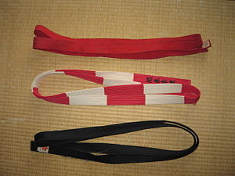

Дзюдо - Історія
Дзюдо - ІсторіяДзюдо як спорт

Становлення дзюдо припало на 1880-ті роки, важкий для бойових мистецтв період після реставрації Мейдзі. У той час серед лідерів Японії панувала політика запозичення західної культури і традиційним військовим мистецтвам (будо) було завдано значної шкоди — вони були оголошені «спадщиною дикості і варварства». Старі майстри припиняли вести заняття, деякі навіть вмирали в злиднях.
Рання історія дзюдо невіддільна від історії життя його творця — Дзіґоро Кано, видатного японського громадського діяча і педагога, чия діяльність була відзначена орденом Вранішнього сонця. Дзіґоро Кано з дитинства цікавився джиу-джитсу, в юності вивчав стилі джиу-джитсу шкіл Тендзін Сін'я Рю та Кіто Рю. На їх основі він розробив нову систему боротьби, якій дав назву Кодокан.
Система рангів у дзюдо (Кю - Дан)

Учнівські ступені:
- кю - білий пояс (рокю)
- 5 кю - жовтий пояс (ґокю)
- 4 кю - помаранчевий пояс (йонкю)
- 3 кю - зелений пояс (санкю)
- 2 кю - синій пояс (нікю)
- кю - коричневий пояс (іккю)

Майстерські ступені:
- дан, шодан - чорний пояс
- 2 дан, нідан - чорний пояс
- 3 дан, сандан - чорний пояс
- 4 дан, йодан - чорний пояс
- 5 дан, ґодан - чорний пояс
- дан, рокудан - білий з червоним
- дан, січідан - білий з червоним
- 8 дан, хачідан - білий з червоним
- 9 дан, кюдан - червоний
- 10 дан, дзюдан - червоний